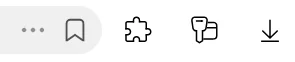
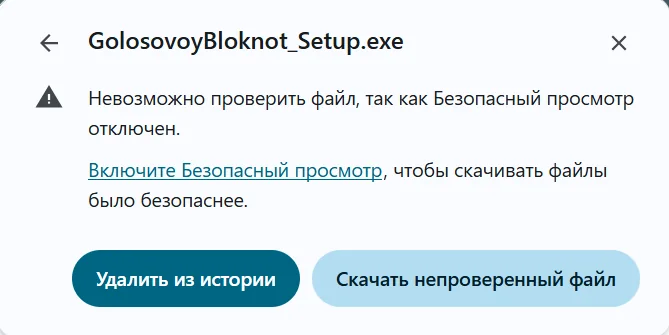
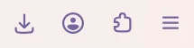
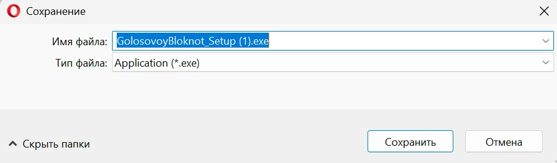

Скачивание началось
Голосовой блокнот
GolosovoyBloknot_Setup.exe · около 250 МБ · установка — 3 шага, около 5 минут
Не началось? Скачать ещё раз
- 1
Откройте скачанный файл
В Яндекс Браузере нажмите значок загрузок вверху справа и выберите GolosovoyBloknot_Setup.exe.

В Edge нажмите значок загрузок вверху справа и выберите GolosovoyBloknot_Setup.exe.
Если Edge пишет «скачивается редко», как на снимке: наведите на файл → «…» → «Сохранить».

В окне «Перед открытием файла… убедитесь, что вы ему доверяете» нажмите не «Удалить», а стрелку рядом → «Все равно сохранить».
 12
12
В Chrome нажмите значок загрузок вверху справа и выберите GolosovoyBloknot_Setup.exe.
Если Chrome пишет, что скачивание заблокировано, как на снимке: нажмите на строку с файлом → «Скачать непроверенный файл» (не «Удалить из истории»). В других случаях кнопка называется «Все равно скачать». Так Chrome блокирует любую программу, если в нём выключен «Безопасный просмотр», — даже Opera с официального сайта.
 1
1

2В Firefox нажмите значок загрузок вверху справа и выберите GolosovoyBloknot_Setup.exe.

Opera спросит, куда сохранить файл, — нажмите «Сохранить».

Потом нажмите значок загрузок вверху справа и выберите GolosovoyBloknot_Setup.exe.

Откройте загрузки браузера — значок вверху справа или Ctrl + J — и выберите GolosovoyBloknot_Setup.exe.
Если браузер переспросит про файл — выберите «Сохранить» или «Все равно скачать».
Не ваш браузер? · · · · ·
- 2
Если Windows спросит — разрешите
Появится синее окно «Система Windows защитила ваш компьютер». Нажмите «Подробнее», затем «Выполнить в любом случае».
 1
1
 2
2
В Windows 10 и 11 окно одно и то же, может отличаться только оттенок. Так Windows встречает любую новую программу без платной подписи Microsoft. Почему так
- 3
Установите
Выберите «Установить только для меня», отметьте «Я принимаю условия» и нажимайте «Далее» → «Установить» → «Завершить». Программа откроется сама.
При первом запуске программа один раз скачает модель распознавания речи — около 220 МБ, 2–5 минут. Потом в любой программе зажмите Ctrl + Alt и говорите.
Не нашли файл?
Нажмите Ctrl + J — откроется список загрузок браузера. Или откройте папку «Загрузки» в Проводнике. Или скачайте ещё раз.
Почему Windows спрашивает?
Windows переспрашивает про каждую новую программу, у которой нет платной подписи Microsoft, — это не значит, что с файлом что-то не так. Окно может появиться и после обновления: для Windows каждая версия — снова новая. Голосовой блокнот работает на вашем компьютере и не отправляет ваши записи в интернет.
Если в окне нет кнопки «Выполнить в любом случае», на компьютере включено «Интеллектуальное управление приложениями» (бывает на новых компьютерах с Windows 11). Напишите нам — подскажем.
Что-то не получилось? Напишите — поможем: Telegram · golosovoybloknot@yandex.ru
Для Windows 10 и 11 · 14 дней бесплатно · о программе